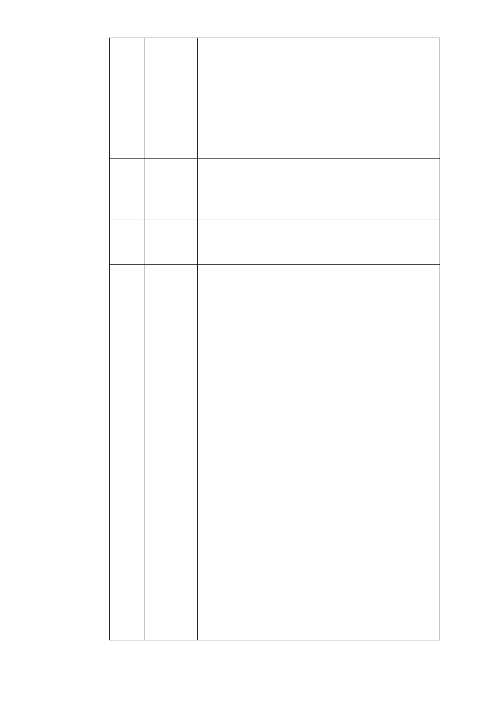

得由土地所有權人主動申請變更為保護
區，如屬地質潛在災害者得由本府逕行變更
為保護區或公共設施用地。
2 商業區 1、毗鄰大眾捷運車站出入口或具商業潛力之
街廓，且非位於本市都市計畫劃定山坡地開
發建築管制地區，變更為商業區。
2、符合本市商業區通盤檢討原則，且面臨路
寬20 公尺以上，沿街已供商業使用。
3 工業區 1、工業區、科技工業區及特定專用區為配合
產業發展趨勢均另案檢討。
2、為維持基本產業發展空間，目前仍作工業
使用者維持工業區。
4 農業區 南湖大橋西側農業區，目前由本府環境保護局
進行垃圾山清運作業中，尚須持續監測土壤污
染程度方可確定未來發展方向，另案檢討。
5 保護區 1、為保育環境生態，就環境敏感程度高者維
持保護區。
2、因應發展需要，需利用保護區土地作必要
之公共設施，在平均坡度在30％以下，無潛
在地質災害或環境敏感之保護區，劃為公共
設施用地。
3.符合以下「本市都市計畫保護區之檢討及變
更原則」者，經申請人自行提出後配合檢討
變更：
(1)依自然環境就環境敏感度加以管制，原
則上均維持保護區使用。
(2)因發展需要，需利用保護土地作必要之
公共設施，得將無潛在地質災害或環境敏
感之保護區，劃為公共設施用地。
(3)為發展文化、教育、慈善、醫療等公益
使用需求，需利用保護區土地作為發展特
定專用區使用，得將無潛在地質災害或環
境敏感之保護區，檢討變更為特定專用
區。
(4)特有天然資源及地方產業特色聚落之保
護區，為避免景觀凌亂及土地資源遭受污
染及破壞，得檢討變更為特定專用區以利
有效管理，提升土地及資源之使用及環境
管理效益。
(5)前述變更後之公共設施用地及特定專用
-4-